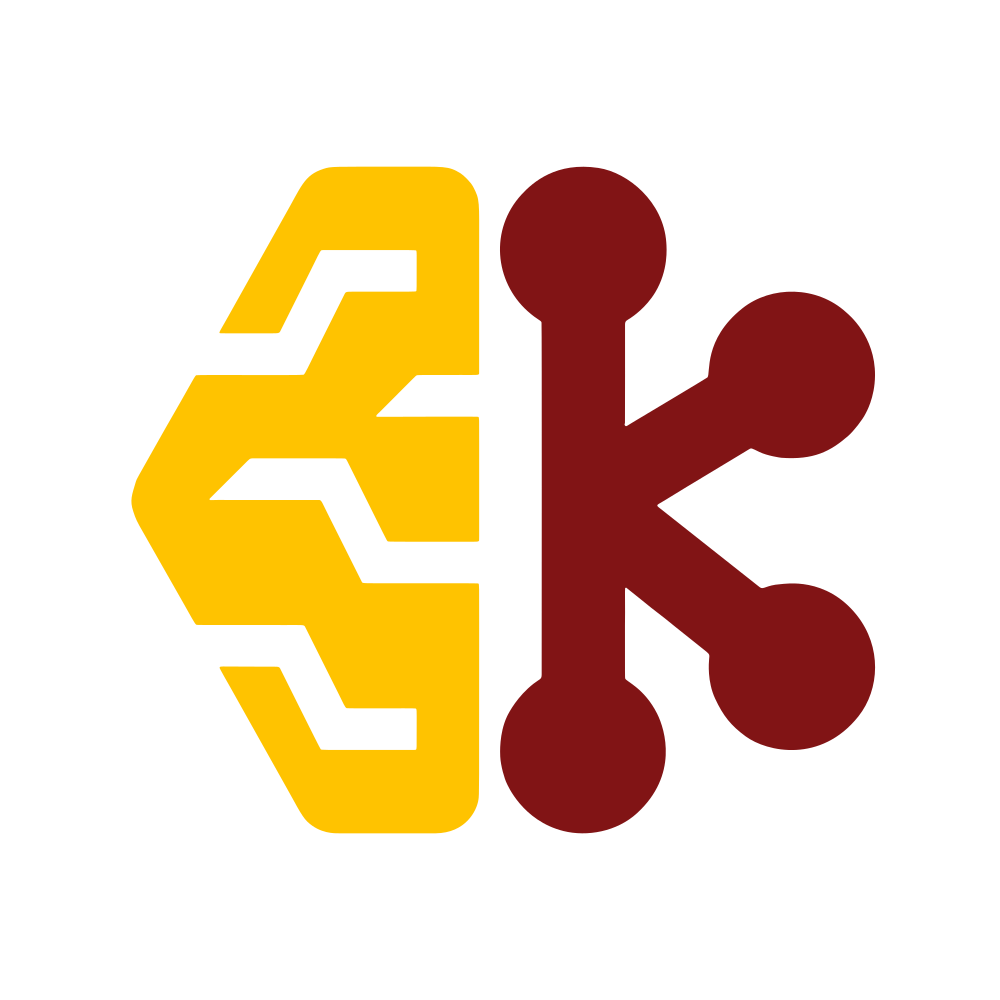

Os mapas ficam neste navegador. Faça backups JSON regularmente.
Arraste os nós ou o fundo. Use a roda do mouse para aproximar.
↑ ↓ para navegar · Enter para centralizar · Esc para fechar
Atalhos disponíveis no Palco. Durante a edição de textos, os atalhos de nós ficam desativados.
Um mapa novo começa com um nó central. Clique diretamente na caixa para selecioná-la. Arraste o botão + de uma caixa até outra para conectá-las; solte no fundo para criar um filho. Clique em Propriedades na barra inferior para editar título e descrição. Arraste para reposicionar; arraste o fundo para mover o palco; use a roda do mouse para zoom.
Atalhos: Insert: novo nó; Tab: filho; Enter: irmão; Delete: excluir; Ctrl+Z: desfazer; Ctrl+Y: refazer; Ctrl+F: buscar nós; Escape: limpar seleção. Ctrl+clique seleciona dois nós para conectá-los pelo menu Editar.
Use Arquivo para administrar projetos, exportar e importar backups JSON, exportar SVG e imprimir. Seus dados ficam salvos localmente no navegador.